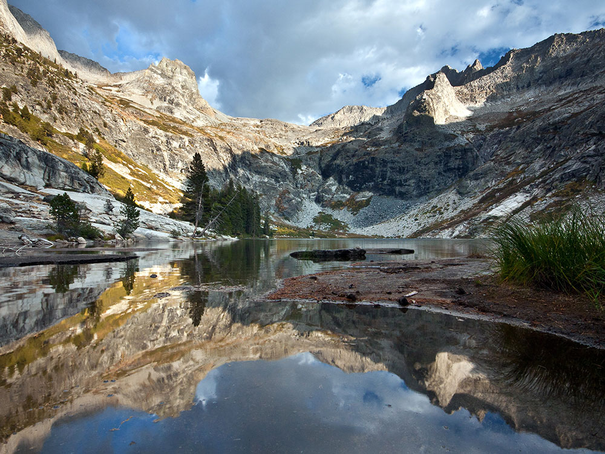

.jpg){kind=link}
Challenging alpine trail winding through granite cliffs, meadows, and forested terrain with access to multiple high-elevation lakes.
General Information
Trail conditions may vary seasonally; Watchtower Trail closed in winter
Motorcycle: $30
Individual (on foot or bicycle): $20
Annual Pass: $70
Backpacking Permit: $15 per trip + $5 per person (required for overnight camping)
Winter access via Hump Trail; snow and ice may require special gear
How to Get There
From Foothills Visitor Center (22 mi): Take Generals Highway north for approximately 22 miles, then turn right onto Wolverton Road and follow signs to the Lakes Trail parking area.
Overview
The Lakes Trail in Sequoia National Park offers one of the most scenic and rewarding hikes in the Sierra Nevada. Beginning at the Wolverton Trailhead, this 13-mile roundtrip journey ascends through lush meadows, granite cliffs, and dense forest to reach four stunning alpine lakes: Heather, Aster, Emerald, and Pear. The trail splits into two routes—Watchtower and Hump Trail—each offering unique views and challenges. The Watchtower Trail, closed in winter, provides breathtaking vistas of Tokopah Valley, while the Hump Trail serves as a safer alternative during snowy months. With elevations reaching over 9,500 feet, hikers are advised to acclimate properly and prepare for changing weather conditions.
Camping is permitted at Emerald and Pear Lakes with a wilderness permit, and bear-proof storage is available at designated sites. The trail is not pet-friendly and is best enjoyed from late spring through early fall when conditions are most favorable. Whether you're seeking a rigorous day hike or a peaceful overnight escape, the Lakes Trail delivers an unforgettable experience amid Sequoia’s rugged beauty. Its combination of alpine serenity and dramatic terrain makes it a must-visit for seasoned hikers and nature enthusiasts alike.
This article uses material from the Wikipedia articles and official tourism pages for the Lakes Trail, which are released under the
